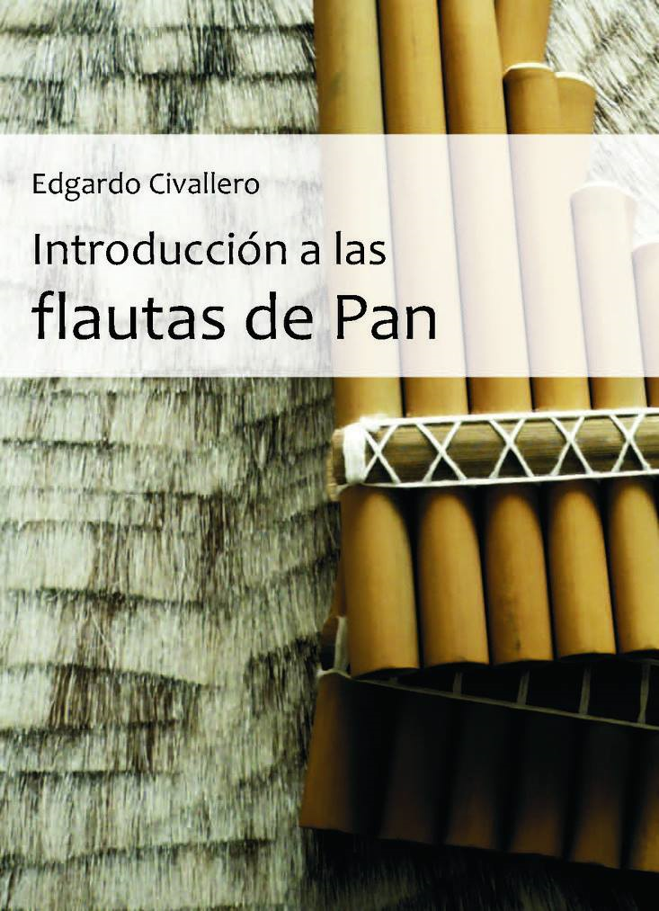

Introducción a las flautas de Pan
Inicio > Libros digitales sobre música > Introducción a las flautas de Pan
Cómo citar este trabajo: Civallero, Edgardo (2025). Introducción a las flautas de Pan. Edición de archivo. Bogotá: El Zorro de Abajo Editora.
Descargar en PDF.
Este libro presenta una exploración global, histórica y organológica de la flauta de Pan (Hornbostel–Sachs 421.112), entendida como un aerófono compuesto por múltiples tubos de longitudes y diámetros variables, generalmente cerrados por un extremo y sonados mediante la proyección del aire sobre el borde abierto. Desde sus probables orígenes en huesos perforados, cañas y materiales naturalmente huecos, el instrumento emerge como un descubrimiento acústico fundamental: que la altura del sonido puede organizarse espacialmente mediante tubos, y que la melodía puede construirse a partir de su agregación.
La obra rastrea este principio desde la Europa paleolítica, donde conjuntos de tubos óseos procedentes de sitios como Dolní Věstonice, Kostenki y la Grotte du Placard sugieren configuraciones tempranas de múltiples tubos, pasando por desarrollos neolíticos y de la Edad del Bronce (p.ej. Cova de l’Or, figurillas cicládicas, Mariupol, Wicklow), hasta contextos de la Edad del Hierro y la Antigüedad clásica. En el mundo griego, el instrumento aparece como la syrinx, en formas como syrinx monokalamos, polykalamos y kerodetos, posteriormente asociada mitológicamente con Pan. En Roma, se convierte en las fistulae, expandiéndose por el Imperio y dejando huellas arqueológicas desde Alesia hasta Pompeya.
La Europa medieval y moderna temprana conserva y transforma el instrumento bajo una amplia gama de nombres y formas vernáculas. Entre ellas se encuentran fistula Panis y frestel en Francia; çanpoña en la literatura ibérica; y numerosas variantes regionales vinculadas a oficios itinerantes y a la vida rural: xipros de afiador, gaita de amolador, castraporcas, asubíos, chifres, apitos de afiadores, xiplas, piulets de sanador, siulets de crestador, chiflos, bufacanyes d'esmolador, sonaveus, xiulits de sanaire, sanatruges, piharet, siulò de crestayre, shiulet crestader, fieould y flahuto. Estas conviven con tradiciones posteriores y aún vigentes como la nai rumana (históricamente fluierar, şueraş, ţeviţa, muscal), la firlinfeu italiana, la svyrili o rebro ucraniana, las skudučiai lituanas (también skudutės, skurdutės, tutučiai), las kugikly y kuvikly rusas, la trstenke eslovena y la multanki polaca.
En Asia, la presencia de la flauta de Pan es discontinua pero significativa. Existen evidencias arqueológicas en Siberia (cultura Kitoi), así como referencias iconográficas y textuales en Anatolia, Persia y el Próximo Oriente de influencia helenística. El instrumento aparece en contextos persas como mūsikār, musikar o mūsikāl, influyendo posteriormente en el miskal otomano y formas afines. En el Cáucaso, la larchemi o soinari georgiana representa una tradición pastoral específica. El desarrollo más extenso y continuo se da en China, donde la flauta de Pan, conocida como páixiāo, aparece desde la dinastía Shang integrada en sistemas cosmológicos de clasificación (bayin), orquestas cortesanas y prácticas rituales. Su evolución incluye formas como xiāo, dixiāo, dongxiāo y fèngxiāo, con números de tubos que van desde pequeños conjuntos hasta complejos sistemas cromáticos. Tradiciones relacionadas se extienden a Corea (so), Vietnam (dding-dek, dding jung), Tailandia y Laos (wot, vote) y el Sudeste Asiático insular, con referencias adicionales en Filipinas e Indonesia.
Las tradiciones africanas presentan una lógica organizativa distinta, basada tanto en flautas de Pan ensambladas como en conjuntos de tubos independientes (stopped-pipes), interpretados colectivamente. Entre ellas se encuentran las dinaka, dithlaka o ditlhaka, organizadas en registros como metelele, meporo, dinokwane y metenyane; las nanga de los Venda; las nyele de los Tonga; las chimveka de los Chopi; las eluma de los Amba; las viyanzi de los Zaramo; las bal de los Ingassana y Berta; las embiltā etíopes; las ngororombe y pembe de Zambia y Zimbabwe; las mishiba luba; y las tradiciones hindewhu del África central. Estos sistemas implican con frecuencia complejas prácticas de ejecución entrelazada, combinando aliento, movimiento, voz y ritmo.
En Oceanía, el instrumento aparece tanto en Polinesia como en Melanesia. En Polinesia destacan las mimiha de Tonga y las fa'aili'ofe de Samoa, mientras que en Melanesia —especialmente en Nueva Guinea y las islas Salomón— existe una amplia diversidad de estructuras, incluyendo flautas en racimo y en hilera como las tátaro, iviliko, kaur, lawi y larasup, además de numerosas variantes locales no sistematizadas.
En todas las regiones, el libro documenta una notable diversidad morfológica: tubos organizados en haces, hileras, arcos o bloques; materiales que van desde hueso, bambú y madera hasta piedra, cerámica y metal; y refinamientos acústicos como tubos resonadores, embocaduras biseladas y sistemas de afinación mediante cera o modificación estructural. Igualmente diversas son las prácticas interpretativas, que van desde el uso pastoral solista hasta complejos sistemas colectivos que generan densas texturas polifónicas.
Más allá de la clasificación, la obra revela patrones culturales recurrentes: la asociación de la flauta de Pan con la vida pastoral, identidades marginales o rurales, marcos rituales y míticos, y formas de producción sonora colectiva. Frecuentemente excluido de las tradiciones musicales de élite, el instrumento persiste en espacios de continuidad, adaptación y transmisión.
Al reunir este inventario global de formas, nombres y prácticas, el libro construye un marco comparativo que demuestra cómo un único principio acústico ha generado un vasto y entramado campo de expresión cultural a lo largo del tiempo y el espacio.